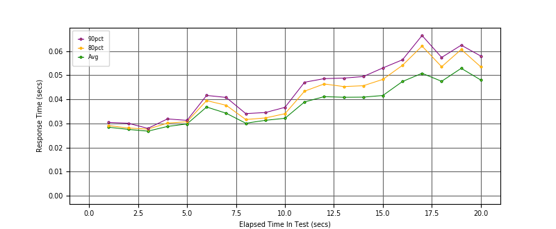
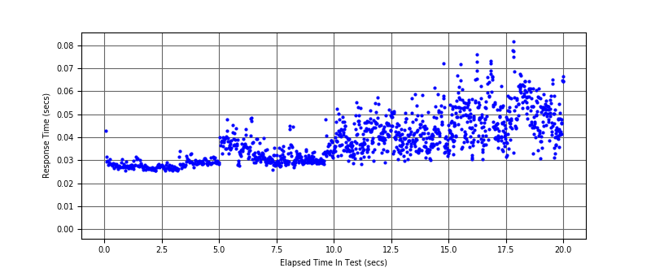
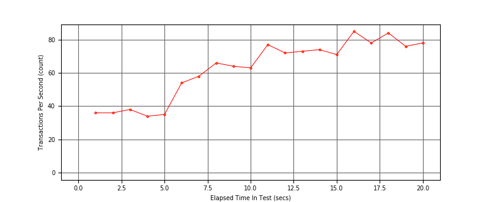

Performance Results Report
Summary
transactions: 1256
errors: 0
run time: 20 secs
rampup: 20 secs
test start: 2018-07-23 13:16:39
test finish: 2018-07-23 13:16:59
time-series interval: 1 secs
workload configuration:
| group name | threads | script name |
|---|
| user_group-1 | 4 | v_perf.py |
All Transactions
Transaction Response Summary (secs)
| count | min | avg | 80pct | 90pct | 95pct | max | stdev |
|---|
| 1256 | 0.026 | 0.040 | 0.048 | 0.054 | 0.059 | 0.082 | 0.010 |
Interval Details (secs)
| interval | count | rate | min | avg | 80pct | 90pct | 95pct | max | stdev |
|---|
| 1 | 36 | 36.00 | 0.026 | 0.028 | 0.029 | 0.030 | 0.031 | 0.043 | 0.003 |
| 2 | 36 | 36.00 | 0.026 | 0.028 | 0.028 | 0.030 | 0.031 | 0.031 | 0.001 |
| 3 | 38 | 38.00 | 0.026 | 0.027 | 0.028 | 0.028 | 0.028 | 0.029 | 0.001 |
| 4 | 34 | 34.00 | 0.026 | 0.029 | 0.030 | 0.032 | 0.033 | 0.034 | 0.002 |
| 5 | 35 | 35.00 | 0.028 | 0.030 | 0.031 | 0.031 | 0.036 | 0.040 | 0.002 |
| 6 | 54 | 54.00 | 0.028 | 0.037 | 0.039 | 0.042 | 0.044 | 0.048 | 0.004 |
| 7 | 58 | 58.00 | 0.028 | 0.034 | 0.038 | 0.041 | 0.047 | 0.048 | 0.005 |
| 8 | 66 | 66.00 | 0.026 | 0.030 | 0.032 | 0.034 | 0.035 | 0.036 | 0.002 |
| 9 | 64 | 64.00 | 0.027 | 0.031 | 0.032 | 0.035 | 0.037 | 0.045 | 0.004 |
| 10 | 63 | 63.00 | 0.028 | 0.032 | 0.034 | 0.037 | 0.038 | 0.048 | 0.004 |
| 11 | 77 | 77.00 | 0.029 | 0.039 | 0.043 | 0.047 | 0.050 | 0.055 | 0.006 |
| 12 | 72 | 72.00 | 0.028 | 0.041 | 0.046 | 0.049 | 0.053 | 0.057 | 0.006 |
| 13 | 73 | 73.00 | 0.029 | 0.041 | 0.045 | 0.049 | 0.051 | 0.052 | 0.005 |
| 14 | 74 | 74.00 | 0.030 | 0.041 | 0.046 | 0.049 | 0.054 | 0.059 | 0.006 |
| 15 | 71 | 71.00 | 0.030 | 0.042 | 0.048 | 0.053 | 0.058 | 0.072 | 0.008 |
| 16 | 85 | 85.00 | 0.031 | 0.047 | 0.054 | 0.056 | 0.061 | 0.072 | 0.008 |
| 17 | 78 | 78.00 | 0.031 | 0.051 | 0.062 | 0.067 | 0.072 | 0.076 | 0.011 |
| 18 | 84 | 84.00 | 0.032 | 0.048 | 0.054 | 0.057 | 0.069 | 0.082 | 0.010 |
| 19 | 76 | 76.00 | 0.031 | 0.053 | 0.061 | 0.062 | 0.064 | 0.067 | 0.009 |
| 20 | 78 | 78.00 | 0.031 | 0.048 | 0.053 | 0.058 | 0.064 | 0.066 | 0.008 |
Graphs
Response Time: 1 sec time-series

Response Time: raw data (all points)

Throughput: 5 sec time-series
